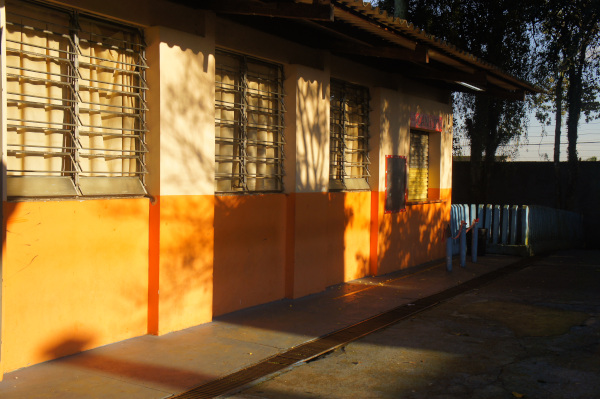
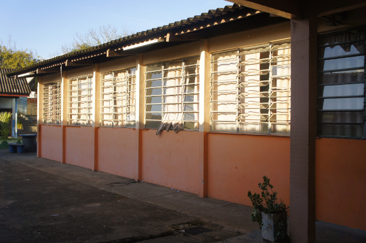
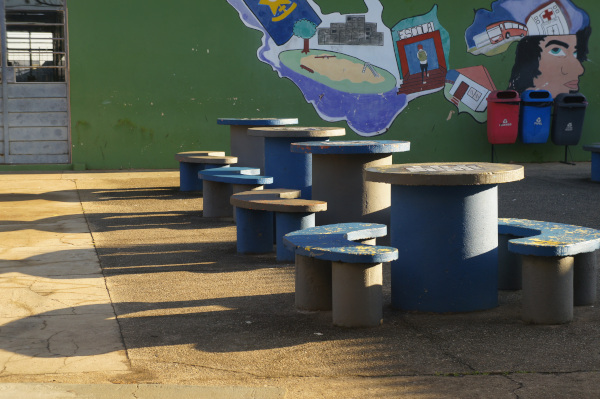
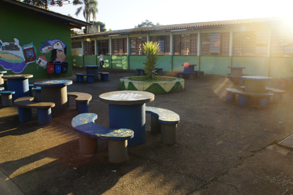

01
Ciência e pesquisa
Em 2024, o programa Little Scientist reuniu 30 estudantes do Ensino Médio em cerca de 12 projetos de experimentação, pesquisa e soluções para questões ambientais.

Mais de seis décadas de educação pública, crescimento e participação no bairro Boqueirão.
Colégio Estadual Euzébio da Mota
Integrante da Rede Estadual de Ensino do Paraná, o Colégio Estadual Euzébio da Mota atende estudantes do Ensino Fundamental e do Ensino Médio no bairro Boqueirão, em Curitiba.
Fundada em 1962 como uma pequena Escola Isolada, a instituição acompanhou a expansão da educação pública na região. Ao longo das décadas, ampliou sua estrutura, sua oferta de ensino e sua presença na comunidade até assumir a identidade que mantém atualmente.

Nossa história
De uma pequena escola de bairro ao colégio atual, cada mudança ampliou sua presença na educação pública do Boqueirão.
Uma Escola Isolada começa a funcionar em prédio cedido pela COHAPAR ao Estado do Paraná.
O Decreto Governamental nº 18.441 oficializa a denominação Casa Escolar.
A instituição passa a funcionar como Grupo Escolar.
O Decreto nº 2.840 oficializa o nome Escola Estadual “Euzébio da Mota”.
Em 18 de abril, é inaugurado o prédio onde a escola funciona atualmente.
Começa a ampliação gradual da oferta dos anos finais do Ensino Fundamental.
A implantação do Ensino Médio consolida a denominação Colégio Estadual Euzébio da Mota.
Além da sala de aula
Ciência, leitura, teatro e preparação para o futuro ampliam a formação para além dos conteúdos tradicionais.
01
Em 2024, o programa Little Scientist reuniu 30 estudantes do Ensino Médio em cerca de 12 projetos de experimentação, pesquisa e soluções para questões ambientais.
02
Criada em 2016, a Gibiteca beneficiava cerca de 900 alunos em 2017 e ampliou o contato dos estudantes com a leitura e a cultura.
03
A peça “A culpa não é sua” levou conscientização a cerca de 20 escolas. Outras ações trabalharam liderança, comunicação e preparação profissional.


Presente e futuro
Da pequena escola iniciada em 1962 a uma instituição que atende diferentes etapas da educação básica, o Euzébio da Mota cresceu junto com o Boqueirão. Sua trajetória reúne ensino, ciência, cultura e participação estudantil.
Conheça os projetos